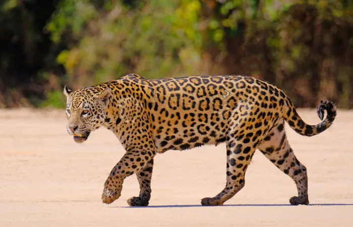

Onça-Pintada
The Onça-Pintada (Panthera onca), (Panthera onca), is considered the largest cat in the Americas and is on the list
of endangered animals in the vulnerable category. Flagship species of Brazil, the jaguar is considered important for
the conservation actions of several Brazilian phytophysiognomies (Atlantic Forest, Amazon Forest, Cerrado and Pantanal).
Habitat destruction and poaching are the main causes of the severe reduction in the jaguar population. They are classified
by the IUCN (International Union for Conservation of Nature) and by IBAMA as a vulnerable species and are part of Appendix
I of CITES (Convention on International Trade in Endangered Species of Wild Fauna and Flora), which lists endangered species.
extinction, whose trade will only be allowed in exceptional circumstances.
Mico Leão Dourado
The image of the small primate, about 60 centimeters high, has traveled the world and, since the 70's, is one of the symbols
of the fight for the conservation of biological diversity. That's because the golden lion tamarin has long been threatened with extinction.
The devastation of the Atlantic Forest almost wiped out the entire population of golden lion tamarins. Originally, the species
was found all along the coast of Rio de Janeiro, reaching Espírito Santo. With the intense occupation of the coastal zone in the state,
accompanied by logging and agricultural activities, the tamarins are confined to around 20 forest fragments.